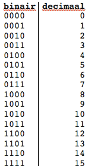
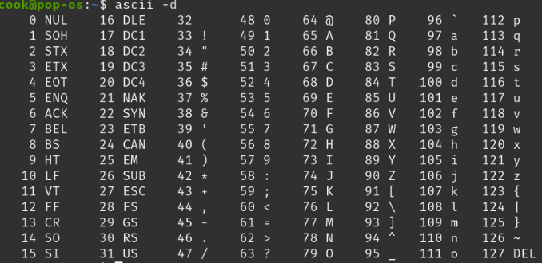

Het binair stelsel is een twee cijferig talstelsel, waarbij er geteld wordt met nullen en enen. Een karakter wordt een bit genoemd, een cijfer in het binair stelsel wordt een byte genoemd. Een byte bestaat uit 8 bits. De waarde van een bit kan een nul of een één zijn. De nullen en enen kunnen als schakelaars gezien worden, als er op een plek een nul staat staat de schakelaar uit en als er een een staat staat de schakelaar aan. De eerste plek heeft een waarde van 20, de tweede plek heeft een waarde van 21, en dat gaat zo door tot 27. Bij het binair stelsel wordt er van links naar rechts geteld. Hieronder kun je oefenen met tellen met behulp van het binairstelsel.
ASCII staat voor American Standard Code for Information Interchange, er wordt net zoals bij het binair stelsel nullen en enen gebruikt. In tegenstelling tot het binaire stelsel zitten er hier 7 bits bij elkaar en worden er geen cijfers gevormd, maar letters en leestekens. Met behulp van die 7 bits kan je 128 verschillende karakters maken, dat kan je hieronder zien.
 